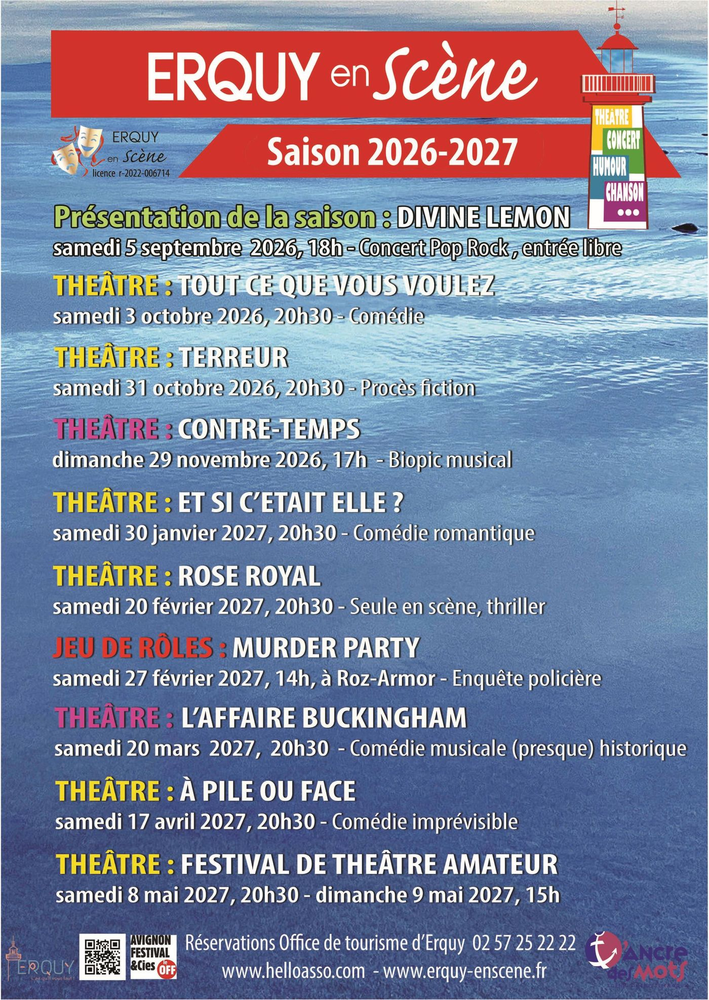

Concert
d'ouverture
d'ouverture
Déjà joué
Présentation de la saison · Concert pop rock
Divine Lemon
Samedi 5 septembre 2026 · 18h
Entrée libre
Lancement de la saison en musique, en entrée libre.
Accueil / Saison 2026-2027
Dix dates à retenir d'octobre 2026 à mai 2027. Merci pour votre fidélité !
Venez découvrir la programmation concoctée par l'équipe d'Erquy en Scène : pas moins de 7 spectacles professionnels, dont plusieurs comédies musicales, un thriller et un procès fiction dont vous êtes les jurés. Une nouvelle Murder Party est au menu à Roz Armor, et le 20e Festival de théâtre amateur clôturera la saison en mai.
Chaque spectacle dispose de sa fiche détaillée : présentation, photo, teaser, tarifs et réservation.
Samedi 5 septembre 2026 · 18h
Lancement de la saison en musique, en entrée libre.
Samedi 3 octobre 2026 · 20h30
Une autrice heureuse… donc en panne d'inspiration.
Samedi 31 octobre 2026 · 20h30
Condamner ou acquitter ? C'est vous, le jury, qui décidez.
Dimanche 29 novembre 2026 · 17h
De Paris à Broadway, une plongée euphorique dans la comédie musicale.
Samedi 30 janvier 2027 · 20h30
L'histoire vraie d'une rencontre pas comme les autres.
Samedi 20 février 2027 · 20h30
Un trio de choc pour un seul en scène coup de poing.

Samedi 27 février 2027 · 14h
Une enquête à mener en équipe sur le site de Roz Armor. Scénario original coproduit par Erquy en Scène et Noir sur la Ville. Inscription obligatoire, 50 joueurs maximum.
Samedi 20 mars 2027 · 20h30
D'Artagnan dégaine… l'humour !
Samedi 17 avril 2027 · 20h30
Le public tient la pièce entre ses mains.

Samedi 8 mai 2027 à 20h30 · Dimanche 9 mai 2027 à 15h
Le vingtième festival de la pièce courte rassemble des passionnés venus de Bretagne et d'ailleurs : créations et comédies du répertoire, pour tous les âges.
Pour bénéficier du tarif réduit de 17 € et de 22 € par et selon le spectacle, il faut en choisir 3 en dehors de celui du Festival du Théâtre des Amateurs.
Le tarif réduit s'applique aussi, sur présentation d'un justificatif, aux moins de 25 ans, aux étudiants et aux demandeurs d'emploi, ainsi qu'aux abonnés d'Erquy en Scène et du Festival d'Avignon OFF 2026.
Pour rappel, après chaque spectacle, nous partageons le verre de l'amitié, sauf pour les spectacles du Festival du Théâtre des Amateurs.
